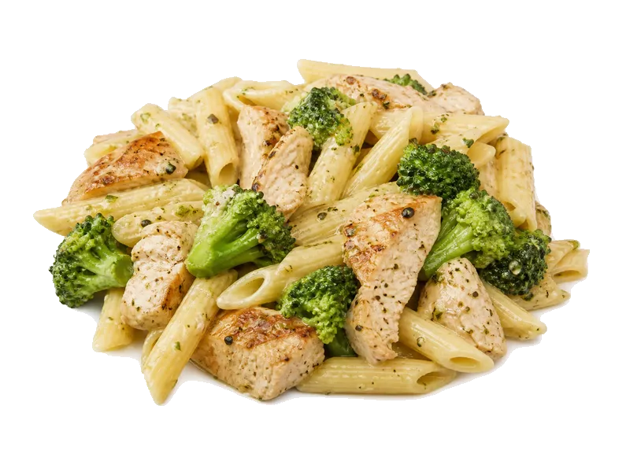

Dania z makaronu
Penne z kurczakiem i brokułami
Penne z kurczakiem i brokułami: 11 g białka, 140 kcal, 18 g węglowodanów i 3 g tłuszczu na 100 g. Kategoria: Dania z makaronu.
Kalorie140 kcalna 100 g
Białko / proteiny11 g
Węglowodany18 g
Tłuszcz3 g
Cena (szac.)~3,43 złza 100 g
Ceny zaktualizowano: maj 2026 (szacunek — ceny w popularnych supermarketach)
Porcja: porcja (350g)
| Kalorie | 490 kcal |
|---|---|
| Białko | 38.5 g |
| Węglowodany | 63 g |
| Tłuszcz | 10.5 g |
| Cena (szac.) | ~11,99 zł |
Szczegółowe składniki odżywcze na 100 g
| Wartość energetyczna (kalorie) | 140 kcal |
|---|---|
| Białko (proteiny) | 11 g |
| Węglowodany | 18 g |
| Tłuszcz | 3 g |
| Tłuszcze nasycone | 1 g |
| Tłuszcze nienasycone | 2 g |
| Witaminy i minerały | Witamina C, Witamina B3, Tiamina (B1) |
| Współczynnik kcal / 1 g białka | 12.7 |
| Cena produktu (szac. za 100 g) | ~3,43 zł |
| Cena za 100 g białka (szac.) | ~31,14 zł |